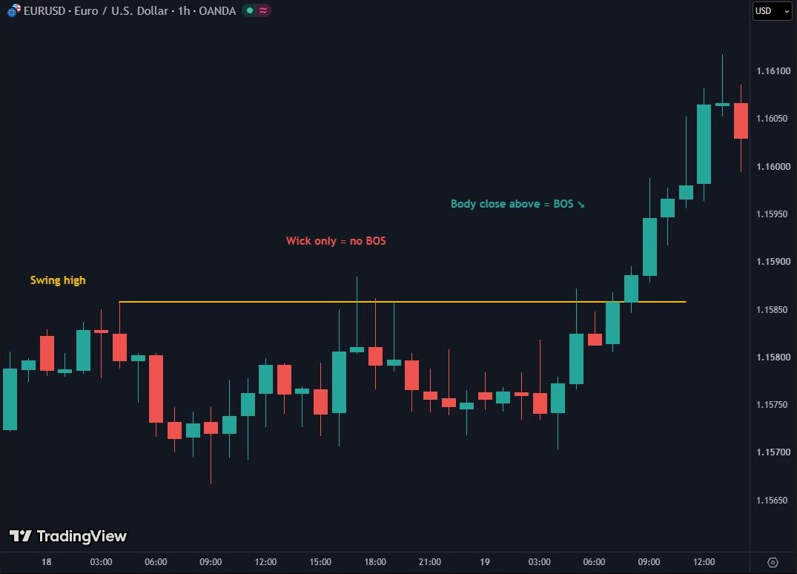

Market Structure
The trend is your friend until it bends. Old trading saying
After this chapter you will be able to
- decide whether a market is bullish, bearish or ranging from its highs and lows alone;
- tell BOS from CHoCH and MSS and apply the rule “close, not wick”;
- recognise inducement, the false break that traps latecomers.
●6.1 Highs and lows: the alphabet of trend
Price never moves in a straight line. It moves in waves: move, pullback, move. Every wave leaves a swing high and a swing low. How they line up relative to each other is market structure. Without clear structure there is no clear analysis.
| Structure | Highs | Lows | Invalidation |
|---|---|---|---|
| Bullish | Higher (HH) | Higher (HL) | A close below the last HL |
| Bearish | Lower (LH) | Lower (LL) | A close above the last LH |
| Range | Roughly equal | Roughly equal | A break and acceptance outside the range |
If you have to squint to see a trend, it isn't a trend. Clean structure is visible from across the room.
●6.2 BOS: close, not wick
BOS (Break of Structure) means price has broken the previous high in a bullish trend or the previous low in a bearish one. It confirms that the trend continues.
One rule, no exceptions: a break counts only if the candle closes beyond the level. A wick above the high is not a break. It is an attempt and often a liquidity grab (Chapter 7).

Price went 3 pips above the high, so it's a break.
Until the candle has closed there is no break. And if it closes back below the high, you have exactly the opposite: a rejection.
●●6.3 CHoCH and MSS: when the character changes
CHoCH (Change of Character) is the first break against the trend. In a bullish trend it is a close below the last HL. It doesn't immediately mean the trend has reversed. It means buyers have lost control for the first time and the picture needs re-assessing.
MSS (Market Structure Shift) is the same thing on the small timeframe where decisions are made (M5, M15). In this book's approach the MSS comes after liquidity has been taken and is the signal that the reaction from the zone is real. The sequence you will meet again and again is:
Liquidity sweep → MSS on M5 → return into a zone (OB/FVG) → decision
| Term | Direction | Timeframe | What it says |
|---|---|---|---|
| BOS | With the trend | Any | The trend continues. |
| CHoCH | Against the trend | Usually H1 and above | A first sign the trend may be turning. |
| MSS | Against the short move | M5, M15 | The reaction from the zone is confirmed; the trigger for a decision. |
●●6.4 Inducement: the trap for latecomers
Inducement is a small, seemingly clear break that invites traders in the wrong direction. Example: in a bearish trend price makes a small bounce and breaks a minor internal high. The impatient buy the “reversal” and put their stops below the last small low. Minutes later price comes back, takes those stops and continues down.
How you recognise it: the break is on a small timeframe, against the direction of the bigger one, with no significant liquidity taken before it, often with a small body and quickly reversed. A real CHoCH usually comes after a sweep of an important level. A CHoCH with no sweep before it is suspicious.
StudentHow do I know whether a break is real or a lure while it's happening?
MentorYou can't know for sure. So you ask three things: is it in the D1 direction? Was liquidity taken before it? Has the candle closed? Two “no”s out of three and you stay out.
●6.5 The most common reading mistakes
| Mistake | Consequence |
|---|---|
| Counting a wick as a break | You enter just as liquidity is being taken, usually at the worst place. |
| Entering immediately on a BOS, without a pullback | A big stop, a poor reward-to-risk ratio. |
| Ignoring the D1 structure | You trade against the big flow. |
| Mistaking inducement for a CHoCH | A quick stop-out. |
| Labelling every small wobble | Noise. Only clear swings, visible without zooming in, are structure. |
●●6.6 Frame-by-frame replay
Play the replay or go step by step. Watch above all the difference between step 2 and step 3: the wick and the body look close but mean different things.
Drill
Press the line on the chart or the button with the letter. You get one try per question.
What you take from Dossier 06
- Bullish: HH + HL. Bearish: LH + LL. Range: equal highs and lows.
- A break counts only on a close. A wick is an attempt or a sweep.
- BOS continues the trend. CHoCH is the first blow against it. MSS is a CHoCH on the small timeframe.
- The key sequence: sweep → MSS → return into a zone.
- Inducement: a small break against the big trend, with no sweep before it.
Checklist before the next chapter
Test yourself
Easy · 5 questions
Intermediate · 3 questions
Experienced Trader level · 1 scenario
No single right answerEURUSD: D1 is bullish (last HL at 1.0780). On H1 price falls towards 1.0800, wicks through the Asian low at 1.0806 and closes above it. On M5, price then closes above the last small LH at 1.0814.
Task: name each event with the terms from the chapter. What is the protected low on D1 and on M5? When would the picture break down?
- D1: bullish structure; protected low 1.0780. The pullback to 1.0800 is within the trend.
- The wick below 1.0806 with a close above it is a sweep of the liquidity under Asia, not a break.
- The M5 close above 1.0814 is an MSS: the short bearish move is broken after a sweep, in the D1 direction.
- Protected low on M5: the low of the sweep (below 1.0806). A close below it breaks the short-term picture. A D1 close below 1.0780 breaks the big one.
- The next step is to find the zone the MSS started from (Chapter 7) and see whether price returns there.